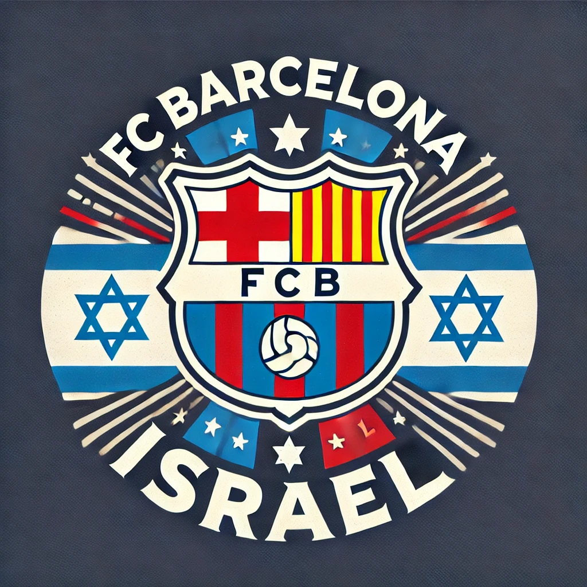

ברוכים הבאים לבארסה ישראל
כאן תמצאו את כל מה שאוהדי ברצלונה אמיתיים צריכים לדעת:
חדשות חמות, עדכונים בזמן אמת, סיקורים מקיפים של משחקים, וניתוחים מעמיקים על הקבוצה האהובה עלינו.
הצטרפו אלינו לחוויה בלתי נשכחת, שתאפשר לכם להיות חלק ממשפחת אוהדי ברצלונה בישראל, וליהנות מתכנים ייחודיים
ומרתקים שנוצרו במיוחד בשבילכם.
יחד, נמשיך לעודד ולתמוך בקבוצה גם מרחוק.
וִיסְקָה בַּאַרְסָה!

ברצלונה השיגה ניצחון ליגה מרשים נוסף במחזור הרביעי של הליגה אשר התקיים ב-31 באוגוסט 2024, כאשר הביסה את
ויאדוליד בתוצאה 7-0 בהר היהודים באיצטדיון המונז'ואיק.
המשחק נפתח בשליטה מוחלטת של ברצלונה, שכבר במחצית הראשונה הובילה 3-0, כאשר רפיניה כבש שניים מהשערים בדרך
לשלושער הראשון בקריירה שלו.
במחצית השנייה, ברצלונה המשיכה להפעיל לחץ בלתי פוסק על היריבה והוסיפה עוד ארבעה שערים. רפיניה השלים את
השלושער המפואר
שלו, וסייע לברצלונה להשיג ניצחון רביעי ברציפות מתחילת העונה.
בעקבות הניצחון, הפער מריאל מדריד צמח לשבע
נקודות, אם כי
לריאל מדריד יש משחק חסר.נשאר 4 נקודות לאחר שריאל מדריד נצחה את בטיס.
הניצחון המוחץ הזה משקף את הכושר המצוין שבו נמצאת ברצלונה בעונה הנוכחית, וממצב אותה בעמדה מצוינת בראש
הטבלה
במאבק על
האליפות.